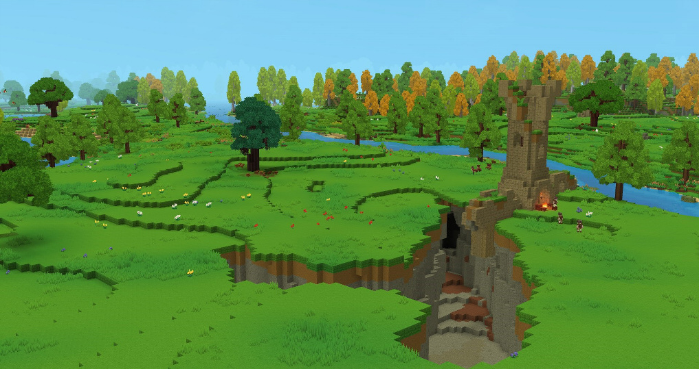

Каждый четверг мы будем выкладывать один скриншот и рассказывать что такое невероятного в этом скриншоте ведь в игре как заявили разработчики будут очень много сюрпризов. Даже сам генратор "WorldGen" может сгенерировать такие вещи что вам и не снилось ваот их цытата
You've now got a sense of the broad principles that govern world generation in Hytale - from unique zones to hand-designed dungeons. All of this is governed by a set of rules, and some of our favourite environmental features come about when two contrasting sets of rules collide. We call these happy little accidents: moments when the principles we've laid out for a given zone combine in surprising ways.
We've discovered rivers that carve their way through mountains and dungeons that have been split in half by a ravine. Swampy terrain might creep halfway up a mountain, or you might be exploring a cave only to discover a lost mine deep within. These small touches help ensure that every world - and the adventures you have there - truly feel different.
Сегодня мы об этом и поговорим

Вроде ничего неоыбчого на скриншоте но приглядитесь внимательно как же всётаки необычно. Каньёон пересикается с башней в итоге Здание просто не построилось до конца или построилось но его немного обрезал сам каньён.
Посмотрите вуступ нижней асти здании. Это наверно должна быть какое-то подземногон сооружение но каньён его одалел и теперь это просто коридор и тупик.
В мире Hytale будет много сего необычного даже та же шахта. Она может быть оченеь очень маленькой (не достроенная как бы) от одного префаба или просто спуска без коридора до бесконечности.
На этом пока всё.